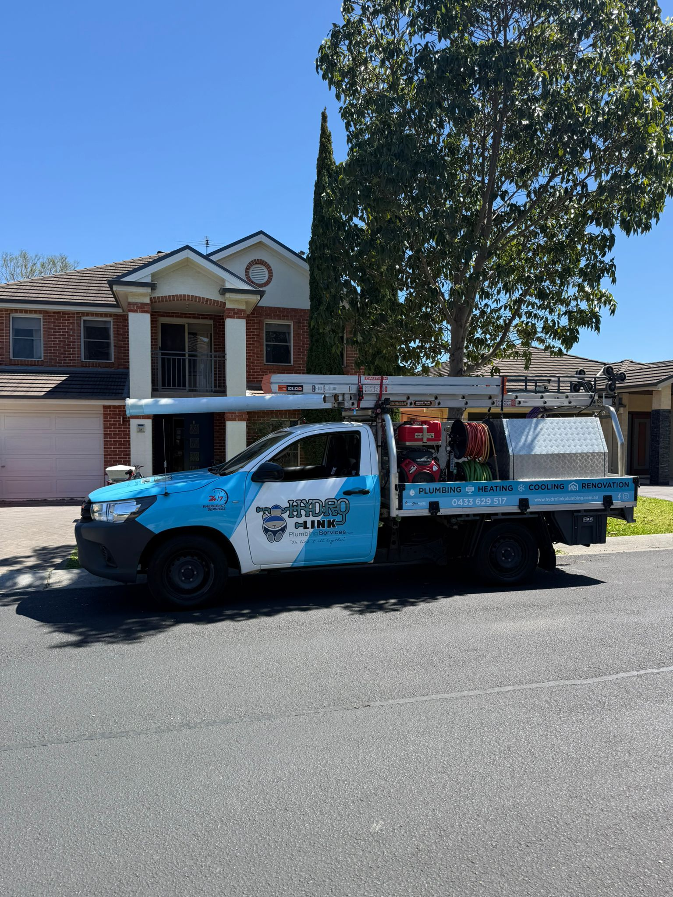
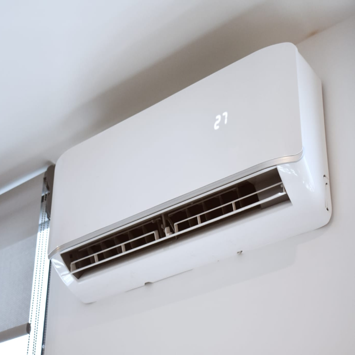

Our expert team have a diverse range of skills that can help a wide range of clients in Sydney.
Commercial Plumber Sydney
Offering Commercial Plumbing Services
We're Open
We're Open

Hydrolink Plumbing Sydney is a trusted provider of comprehensive plumbing and gas services throughout the Sydney area. Our team of highly qualified and licensed technicians excels in water management solutions, maintenance, and repairs, addressing common issues swiftly and effectively.
With a team of experienced professionals, we have earned and maintained a 5-star reputation, making us one of Sydney's leading local plumbing companies. When you choose Hydrolink Plumbing Sydney, you can expect top-quality service tailored to your plumbing needs.
If you're searching for a reliable local plumber, we offer fast, affordable, and 24/7 service. Our certified plumbers are always ready to resolve your plumbing issues promptly and efficiently.

Hydrolink Plumbing Sydney specializes in all aspects of plumbing and gas services across the Sydney region. Our qualified technicians lead the industry in water management solutions, maintenance, and repairs, efficiently resolving common issues with expert service.
With a team of experienced, licensed plumbers, we’ve built and maintained a 5-star reputation as one of Sydney’s top plumbing companies. When you choose Hydrolink Plumbing Sydney, you’re assured of receiving top-notch service for all your plumbing needs.
If you're searching for a "plumber near me," we offer fast, local, and affordable service. Available 24/7, our certified plumbers are equipped to handle any plumbing issue swiftly and efficiently.
As Sydney’s leading plumbing provider, we pride ourselves on being fast, reliable, and responsive. With a large team of experienced plumbers, we can arrive at your location within an hour and complete most jobs the same day. Offering comprehensive services across Sydney, we provide transparent pricing and maintain open communication, with our friendly staff always ready to assist.
Hydrolink Plumbing Sydney is your go-to for resolving blockages, burst pipes, and leaks, no matter the size or severity. We serve all of Sydney and are recognized as experts in hot water systems, ensuring you have hot water year-round. Whether it’s fixing a leaking tap or repairing showers, our team is here to help.
Our expertise extends to bathroom solutions as well. We handle all toilet issues, from leaks to repairs, and can even upgrade your bathroom. We also install the best water filtration systems to ensure clean water throughout the year. For roof and gutter repairs, or any other plumbing need, contact Hydrolink Plumbing Sydney today.


Are you in need of professional plumbing services for your Sydney kitchen? At Hydrolink Plumbing Sydney, we offer 24/7 service and can attend to your plumbing needs promptly. Upon arrival, we provide a complimentary plumbing inspection of your entire property, offering you a detailed plan for any future plumbing requirements.
Whether your property is a house, apartment, or commercial premises—large or small—our fully qualified Sydney plumbers will arrive on time, as promised. If you’re considering a kitchen renovation, don’t overlook the importance of proper plumbing. Hydrolink Plumbing Sydney specializes in kitchen renovation plumbing and is fully equipped to handle all aspects of the job.
With over a decade of experience, we understand the challenges involved in kitchen renovations and can help extend the lifespan of your appliances and fixtures, ultimately saving you money. Our comprehensive kitchen renovation services can transform your kitchen into a space you’ll be proud of. Trust Hydrolink Plumbing Sydney to ensure your kitchen plumbing is efficient and reliable.
Rainwater harvesting is becoming increasingly popular in Sydney as people look for ways to reduce their water bills and conserve water. Sydney Rainwater harvesting is a great way to make use of natural resources and store water for an extended period of time. A rainwater tank is an ideal solution to this, especially around the Sydney area, where rainfall is abundant. Sydney Rainwater tanks are an excellent investment for any property as they not only provide access to free water but also benefit the environment by reducing stormwater runoff. With a rainwater tank, you can save on your water bills and make a significant contribution to sustainability. Rainwater tanks in Sydney allow individuals to capture and store the precious rain that falls on their rooftops. This can provide a consistent supply of drinking water, even when there is an extended dry spell. Rainwater tanks Sydney are an essential addition to any home, providing many potential benefits.
Looking for an air conditioning installation service near you in Sydney?
Hydrolink Plumbing, is fully licensed and insured to install a comprehensive range of residential and commercial air conditioning systems, providing competitive pricing on both installation and system supply.
As a reputable and experienced air conditioning installation company, we pride ourselves on our track record of excellence and customer satisfaction. Our expertise in air conditioning installation guarantees seamless operation and enhanced convenience. We prioritize timely and efficient service, ensuring that your systems are installed correctly without compromising quality.
We invite you to contact us ,for an obligation-free, upfront quote on your preferred air conditioning system. We look forward to assisting you further.

At Hydrolink Plumbing, we proudly serve a diverse clientele throughout the Sydney area. Our team of fully qualified and trained plumbing professionals consistently delivers top-notch customer service. We offer transparent pricing tailored to your needs, along with comprehensive plans and expert advice for every job.
Our services include:
As Sydney leading plumbers
we are known for our speed and reliability. No matter what plumbing service you require, you can count on us to arrive on time, prepared to exceed your expectations. We take pride in going the extra mile to address your needs and carefully listen to your concerns to ensure you receive exceptional service.
From emergency burst pipe assistance to thorough drain cleaning, hot water services, and bathroom plumbing,our experienced and courteous plumbers are here for you every time. For urgent requests, contact Hydrolink Plumbing 24/7 at
0433629517
At Hydrolink Plumbing, we serve a diverse range of clients throughout the Sydney area. Our team of Optimised Plumbing Services, employees is fully qualified and trained, consistently delivering top-notch customer service. We offer transparent pricing tailored to your needs, along with a comprehensive plan of action and expert advice for every job.
Our extensive services include commercial and residential plumbing, hot water systems, bathroom renovations, water leak detection, emergency plumbing, affordable plumbing solutions, gas leak detection, gas pipeline repair, kitchen renovations, toilet repairs, and more. As Sydney's leading plumbing service, we pride ourselves on being fast and reliable.
No matter the plumbing service, you require, you can trust us to arrive on time, prepared to exceed your expectations. We prioritize your needs and listen attentively to your concerns to ensure you receive the service you deserve.From burst pipe assistance to thorough drain cleaning, hot water services, bathroom plumbing, and beyond, our experienced, professional, and courteous plumbers are here to help.
If you're looking for plumbing services in Sydney, it's important to make sure that you hire a licensed Sydney plumbing contractor. Not only will a licensed plumbing contractor Sydney save you time, but they will also provide a higher-quality service that you can trust. Licensed plumbing contractors in Sydney are experienced and knowledgeable about local regulations and codes. As a result, they can provide quality Sydney Plumbing Solutions that will suit the needs of any home or business. They also have access to the latest tools and technologies to ensure their work is of the highest quality. Plumbers in Sydney are highly trained and experienced professionals who can provide the best services for any Sydney plumbing needs. By hiring a licensed plumber in Sydney, you can be sure that the job will be done safely and with minimal disruption to your home or business. It is important to research the contractor's credentials and make sure they are licensed and insured when it comes to hiring plumbers in Sydney. By taking the time to research and interview potential contractors, you can ensure that your Sydney plumbing job is completed correctly and safely with the help of Hydrolink Plumbing Services in Sydney.
When you have a Sydney plumbing emergency after business hours, it can be a struggle to find someone to help fix the problem. Home emergencies, such as Sydney plumbing issues can occur at any time, so it is important to have reliable Sydney after-hours plumbers available. Hydrolink Plumbers in Sydney that offer services during business hours and after-hours are the best option to ensure plumbing issues are taken care of swiftly and efficiently. Sydney Plumbing solutions can be a difficult and time-consuming task, especially if it is an emergency. Professional after-hours plumbers in Sydney are equipped to solve plumbing issues of all sizes, from simple clogs to major repairs. With the help of experienced Sydney plumbing experts, you can rest assured that your Sydney plumbing problem will be resolved quickly and effectively. With cost-effective services and fast response times, Sydney after-hours plumbers are a great solution for any Sydney plumbing issue. Thus, finding a reliable after-hours Sydney plumber is essential for ensuring that plumbing-related issues don't deteriorate over time, leading to more costly repairs.
When it comes to Sydney plumbing, you want to make sure that you hire the right person for the job. Unfortunately, however, there are many dangers associated with hiring the wrong Sydney plumber – from shoddy workmanship to damaging your property. Poor plumbing work can lead to water damage and expensive repairs due to leaks or faulty connections. Hiring the wrong plumbers Sydney can be an expensive mistake, as the consequences of such negligence can be costly, time-consuming and dangerous. One key risk of employing the wrong plumber is that any repairs made may not be up to code, resulting in potential fines from building inspectors or even a lawsuit for accidental water damage. Additionally, unqualified Sydney plumbers might fail to recognize more serious plumbing Sydney issues that could bring about serious consequences if left unresolved. Other consequences include improper installation of pipes that could lead to future burst pipes Sydney and the safety of the people living in the house being at risk if the Sydney plumbing installation is not done correctly. There is also a risk of toxic gas build-up if pipes and fixtures are not properly installed or maintained. It is important not to take hiring a Sydney plumber lightly, as bigger troubles can arise from the wrong decision. Not only could the quality of work be subpar and cause more damage, but it could also result in bigger expenses if the shoddy work needs to be fixed by someone else. Moreover, hiring an unprofessional plumber could even lead to unsafe conditions due to inadequate maintenance or installation.
Furthermore, an untrustworthy plumber may charge you more than you should be paying and not use quality materials, leaving you with an inferior job in the end. Finally, property damage is a possible consequence of hiring the wrong plumber. An unprofessional plumber may use inappropriate materials or use improper techniques, leading to property damage and further expenses. A poorly executed Sydney plumbing job can lead to increased water bills due to leaks and inefficient pipes. Hiring the wrong plumber can waste your time and money and leave you with a Sydney plumbing system that is not up to par. In addition, poor installation or repair can cause Sydney backflow issues, which can potentially result in a contaminated water supply, leading to a range of health problems.
Hiring the wrong plumber can have serious and costly consequences, especially when property damage is a result. An experienced and qualified professional will know how to properly diagnose a problem and fix it safely without risking property damage or other unexpected problems. Unprofessional or inexperienced plumbing Sydney can lead to property damage, long-term problems, wasted time and money, and potential health hazards. In addition to property damage, an unqualified Sydney plumber may not be able to identify the full scope of the problem or properly complete the repair process. Ultimately, proper research when hiring a reliable Sydney plumber will save you time, money, and property in the long run. Don't be tempted by the lowest price - it may end up costing you more in the long run if you go with an inexperienced or unqualified professional. It is clear that not taking the time to do your due diligence when hiring a Sydney plumber can lead to costly and potentially dangerous consequences. To ensure you find the right Sydney plumber for your project, it's important to do your research and compare potential candidates. Take the time to read online reviews and ask around for recommendations, as this can help you find someone who is both reliable and qualified.
When you are looking for a Sydney plumber, you want to ensure that you get the best service available. Whether you require Sydney plumbing repairs, maintenance, or a full replacement, you need to find a reliable, experienced Sydney plumber on whom you can rely. Hydrolink Plumbing can help you in all aspects of plumbing needs.
Kitchen Plumbing Sydney: Hydrolink Plumbing offers effective and skilled kitchen plumbing services Sydney to both residential and commercial clients. Our skilled Sydney plumbers use high-quality materials and cutting-edge technologies to ensure the smooth installation of all kitchen appliances. To ensure that each appliance functions effectively, kitchen plumbing Sydney must involve the proper installation of sinks, dishwashers, disposals, and ovens. We have extensive experience in all aspects of kitchen remodelling. Hydrolink Plumbing covers all of your kitchen renovation plumbing Sydney needs, including connecting, disconnecting, and relocating kitchen plumbing fixtures Sydney and fittings, etc.
Bathroom Plumbing Sydney: Bathroom plumbing can be complex and require professional skill sets to ensure proper installation and maintenance. Proper installation will help to preserve the longevity of all fixtures, including toilets, showers, sinks, and bathtubs. Regular maintenance of bathroom plumbing Sydney is also an important aspect, which helps prevent any unexpected breakdowns or leaks from occurring. Hydrolink Plumbing offers experienced and specialised bathroom plumbing services Sydney that have been designed to make your life easier. From selecting bathroom fixtures Sydney to completing the entire bathroom renovation process Sydney, our experienced team of professionals can provide you with the assistance you need to create a bathroom that meets your needs and standards. Hydrolink Plumbing can provide you with a variety of bathroom renovation services Sydney, such as plumbing, tiling, and painting, to help you achieve your desired look.
Residential Plumbing Sydney: Hydrolink Plumbing provides a wide range of residential plumbing service in Sydney, from unblocking sinks and drains to repairing burst pipes and leaky taps Sydney. We take pride in helping you resolve any plumbing issues Sydney expertly and efficiently. Whether it is simple maintenance and repairs or complex installations, Hydrolink Plumbing is here to solve your problem. We can also help with more complex jobs such as installing new water heaters, replacing toilets and showers, and fitting complex bathroom fittings – all to ensure your home is running smoothly.
Commercial Plumbing Sydney: Hydrolink Plumbing provides comprehensive commercial plumbing services in Sydney, including troubleshooting and repairing leaking pipes Sydney, replacing fixtures, and clearing clogged drains. Our Sydney plumbers are highly experienced and equipped to provide a wealth of commercial plumbing services throughout Sydney. Hydrolink Plumbing has extensive experience in providing commercial plumbing services in Sydney and can help businesses keep their premises safe and secure with timely maintenance services. Our commercial plumbing services Sydney also include emergency commercial plumbers in Sydney to respond quickly to any urgent commercial plumbing issues. Our commercial plumbers in Sydney have the expertise and experience needed to deliver reliable commercial plumbing solutions Sydney that can be counted on for years to come.
It is important to know what to look for while looking for a reliable licensed plumber in Sydney. You want someone who is skilled, trustworthy, and reliable. The necessity for a licensed plumber in Sydney is important since it ensures that the plumbing services Sydney offered by a licensed Sydney plumber meet the required safety and quality standards. A licensed Sydney plumber has the skills and expertise to guarantee that your Sydney plumbing system is functioning correctly, giving you peace of mind that it fulfils all of the required standards.
Knowing the warning signs of hydro jet cleaning Sydney can help you understand when it is not safe to use. Sydney Hydro jetting can cause damage to older sewer lines due to their lack of durability, so if you live in an older home, it's important to inspect the sewer lines before proceeding with a Sydney hydro jet cleaning. Hydro jetting Sydney should not be used on pipes smaller than 4 inches in diameter as the pressure from the water might damage them. Before choosing this method, it is important to note that hydro jet cleaning Sydney is not recommended for cast iron pipes since it can damage them and can also break seals located in newer pipelines. Additionally,hydro jetting Sydney should not be used on any type of septic system since the high pressure of the water can cause septic tank failure or pipe joint separation. It's best to consult a professional before deciding whether or not hydro jet cleaning Sydney is suitable for your home's Sydney plumbing system .
$250 cash back When you spend $2000 or more on general plumbing
Each service is performed with the utmost precision and care, with the safety of you and your family in mind.
Give us a call on 0433 629 517 or book a service online


 Call Hydrolink Plumbing
Call Hydrolink Plumbing